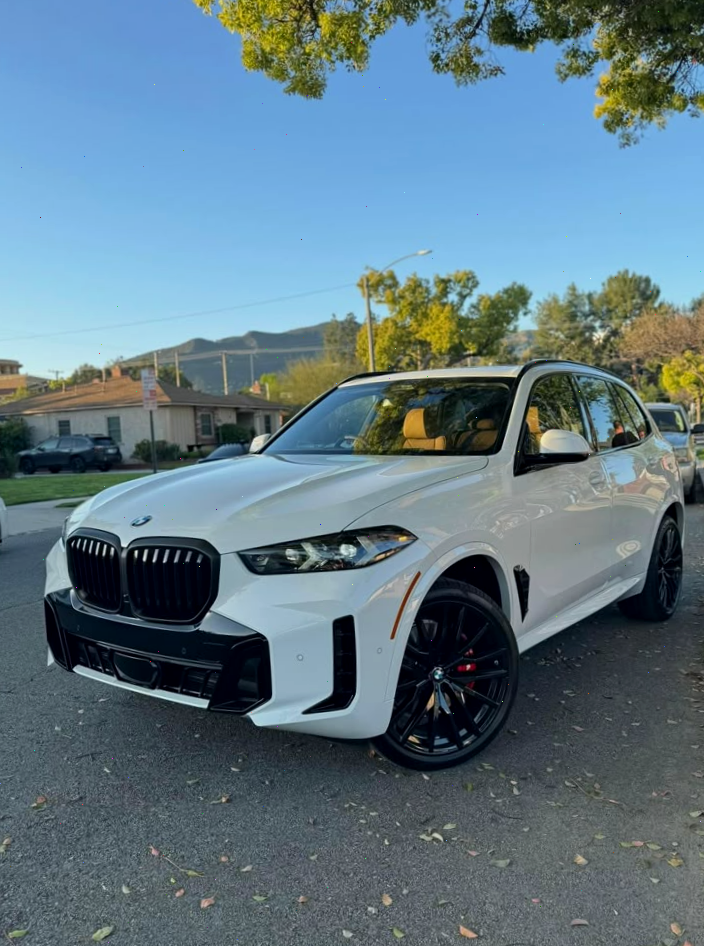

¡Hermanoooos, hoy es fiesta total! 🎉 Quiero felicitar a mi alumno, mi amigo y mi hermano del alma — Jorge Reyes de Trujillo, que acaba de ganar el premio más grande en la historia de PredictorPro: ¡2 000 000 PEN! 😱💰
Jorge estuvo conmigo desde el inicio. Era chofer y apenas le alcanzaba para el alquiler. Pero no se quejaba — escuchaba, aprendÃa y seguÃa las señales. Sin inventar nada. Y hoy, hermanos... ¡lo logró!
🎁 En honor a su victoria, le regalo un auto nuevo, con las llaves entregadas en mano. Porque se lo merece, ¡carajo!
🔥 Y para todos mis hermanos del canal, lanzo la semana del agradecimiento:
✅ Si recargas desde 50 PEN, recibes +500 PEN de regalo
â³ Solo por 7 dÃas. Solo para mi gente. Solo desde aquÃ.
Esto no es suerte. Es trabajo, fe y decisiones correctas. Jorge ya ganó. ¿Y tú? Es tu momento.
 Aviator
Aviator
 Mines
Mines
 Apple Of Fortune
Apple Of Fortune

 Chat de soporte
Chat de soporte